Krzyż strzyka, więc kładziesz się na kanapie i czekasz, aż przejdzie. Znam to, sam nie jestem z innej planety. Tyle że badania i wytyczne mówią co innego, a ćwiczenia na ból krzyża to nie zestaw cudów z internetu, tylko kilka prostych ruchów dobranych do tego, jak bardzo boli dziś.
Szybka odpowiedź
Jeśli ból krzyża nie daje objawów alarmowych, leż najwyżej 1–2 dni, a potem wracaj do zwykłej aktywności w granicach tolerancji bólu. W przewlekłym bólu krzyża ćwiczenia poprawiały ocenę bólu średnio o 15 punktów na skali 0–100 w porównaniu z brakiem leczenia. Rodzaj ćwiczeń ma mniejsze znaczenie niż regularność.
Kluczowe wnioski
- Drętwienie krocza, kłopoty z pęcherzem albo narastające osłabienie nóg przy bólu krzyża wymagają pilnej pomocy, nie ćwiczeń.
- Przy ostrym bólu krzyża rada, by pozostać aktywnym, daje niewielką, ale realną przewagę nad leżeniem w łóżku.
- Żaden rodzaj ćwiczeń nie wygrywa wyraźnie, więc wybierz ten, który będziesz robić regularnie.
- W badaniu WalkBack marsz z edukacją wydłużył medianę czasu do nawrotu bólu ze 112 do 208 dni.
Kiedy z bólem krzyża jechać do lekarza zamiast ćwiczyć?
Natychmiast, jeśli bólowi krzyża towarzyszą nowe kłopoty z pęcherzem lub jelitami, drętwienie albo mrowienie w okolicy krocza, pośladków i wewnętrznej strony ud, szybko narastające osłabienie nóg albo nagła utrata funkcji seksualnych. To objawy alarmowe zespołu ogona końskiego. Przy nich ćwiczenia z tego tekstu odkładasz i szukasz pomocy od razu: SOR albo numer 112.
Pilnej oceny lekarskiej wymaga też ból po urazie, na przykład po upadku albo wypadku, ból nagły i silny, którego nie ruszają leki przeciwbólowe, oraz ból krzyża u osoby po chorobie nowotworowej, z niewyjaśnionym chudnięciem albo z gorączką.
Teraz dobra wiadomość. Większość bólów krzyża nie wynika z poważnej choroby i mija z czasem. Według AOTMiT u ponad połowy osób objawy ustępują samoistnie po 1–2 tygodniach. Ten tekst dotyczy właśnie takiego, niespecyficznego bólu krzyża. Jeśli lekarz rozpoznał u ciebie konkretną przyczynę, na przykład złamanie, zwężenie kanału kręgowego albo przepuklinę z objawami neurologicznymi, zestaw ćwiczeń ustal z fizjoterapeutą. O tym, co naprawdę oznaczają zmiany w krążkach i kiedy wymagają pilnej konsultacji, przeczytasz w artykule o dyskopatii po 50-tce.
Czy leżenie w łóżku pomaga na ból krzyża?
Pomaga mniej niż ruch. Przegląd Cochrane z 10 badań z udziałem 1923 osób pokazał, że przy ostrym bólu krzyża rada, by pozostać aktywnym, dawała niewielką poprawę bólu i sprawności w porównaniu z zaleceniem leżenia. Przy rwie kulszowej różnicy praktycznie nie było.
Uczciwie: to nie jest nokaut. Efekt był mały, a autorzy oceniają jakość tych dowodów jako umiarkowaną. Dlatego nie powiem ci, że leżenie to najgorsze, co możesz zrobić. Powiem coś skromniejszego, za to lepiej udokumentowanego: leżenie plackiem nie przyspiesza powrotu do formy, a długie leżenie ma swoją cenę.
Tę cenę Cochrane opisuje wprost: długotrwałe leżenie może osłabiać mięśnie i pogarszać funkcje organizmu. Polska Agencja Oceny Technologii Medycznych i Taryfikacji, zbierając zalecenia towarzystw naukowych, podaje konkretną granicę: odpoczynek w łóżku maksymalnie 1–2 dni po wystąpieniu bólu, a potem zwykła aktywność w granicach tolerancji bólu.
W praktyce wygląda to tak. Jeśli rano nie wstaniesz z łóżka bez jęku, poleż chwilę, ale jeszcze tego samego dnia przejdź się po mieszkaniu. Jutro po klatce schodowej. Pojutrze do sklepu. Ruch nie musi być treningiem, ma być codziennością.
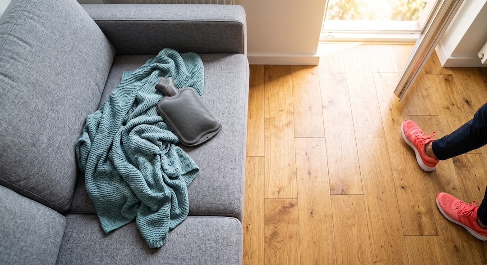
Dlaczego ruch działa na ból krzyża lepiej niż oszczędzanie się?
Bo przy przewlekłym bólu krzyża ćwiczenia mają po swojej stronie najwięcej dowodów. W przeglądzie Cochrane z 2021 roku osoby ćwiczące oceniały ból średnio o 15 punktów lepiej na skali 0–100 niż osoby bez leczenia, z typową opieką albo z placebo. Pomiar dotyczył okresu około trzech miesięcy od startu.
Dla porządku: na starcie ból wynosił średnio 51 punktów, więc 15 to odczuwalna różnica, a nie kosmetyka. Na sprawność w codziennych czynnościach efekt był mniejszy, około 7 punktów. Skutki uboczne były zwykle drobne, najczęściej chwilowo mocniejszy ból pleców i zakwasy, a w grupach bez ćwiczeń zgłaszano podobne dolegliwości.
Jedno zastrzeżenie, ważne dla nas: średni wiek uczestników tych badań wynosił 43,7 roku. Większość danych pochodzi więc od ludzi młodszych od nas. Wytyczne WHO z 2023 roku zalecają jednak programy ćwiczeń przy przewlekłym bólu krzyża u dorosłych i osobno podkreślają, że osoby starsze z takim bólem częściej wcześniej wypadają z rynku pracy.
Skąd ten efekt? Nie ma jednej odpowiedzi. Ćwiczenia mają wzmacniać mięśnie i stawy oraz poprawiać zakres ruchu. Działają też na sposób myślenia o plecach: wytyczne NICE wskazują unikanie zwykłych czynności z powodu błędnych przekonań o chorobie jako przeszkodę w powrocie do zdrowia. Kto boi się schylić, ten się nie schyla. Ruch przerywa to koło.
Nie jesteś w tym sam. Według WHO w 2020 roku ból krzyża miało około 619 milionów ludzi, czyli mniej więcej co trzynasta osoba na świecie, a WHO nazywa go główną przyczyną niepełnosprawności na świecie.
Jakie ćwiczenia na ból krzyża są najlepsze?
Te, które będziesz robić. To nie wymówka, tylko wniosek z badań. Przegląd Cochrane ćwiczeń kontroli motorycznej, czyli popularnej stabilizacji, nie wykazał klinicznie istotnej przewagi nad innymi formami ćwiczeń. Autorzy piszą, że wybór ćwiczeń powinien zależeć od preferencji pacjenta, kosztów i bezpieczeństwa.
Metaanaliza sieciowa z 2020 roku, obejmująca 89 badań, najwyżej oceniła pilates, ćwiczenia stabilizacyjne, trening oporowy i trening aerobowy, zależnie od mierzonego efektu. Samo rozciąganie i ćwiczenia metodą McKenziego nie różniły się w niej od braku leczenia pod względem bólu i sprawności. Jakość dowodów autorzy ocenili jako niską, więc traktuj to jako wskazówkę, a nie wyrok.
Dlatego w zestawie poniżej rozciągania jest mało, a dużo jest ruchu, stabilizacji i siły. Łagodne rozciąganie przyda się na początku, żeby ruszyć zesztywniałe plecy, ale nie jest głównym lekarstwem. Jeśli chcesz odróżnić te dwie rzeczy, zobacz prosty program mobilności i rozciągania po 50-tce.
Wytyczne NICE dorzucają praktyczną zasadę: przy wyborze rodzaju ćwiczeń trzeba brać pod uwagę potrzeby, preferencje i możliwości danej osoby. Jeśli nienawidzisz maty, chodź. Jeśli lubisz grupę, idź na pilates. Liczy się to, co zrobisz w poniedziałek, a nie to, co wygrało w rankingu.
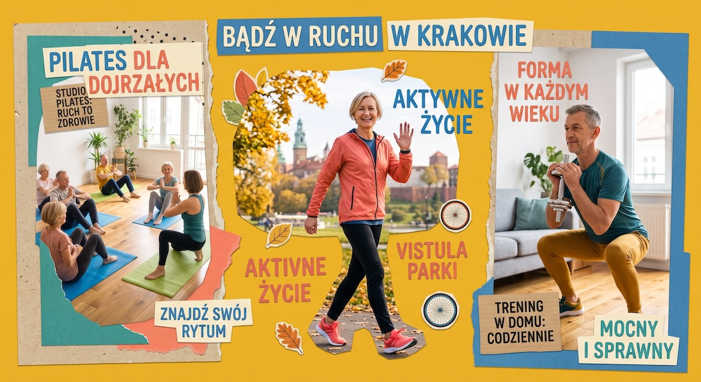
Jak ćwiczyć przy ostrym bólu krzyża — poziom 1?
Ten poziom jest na dni, kiedy wstanie z łóżka to cała logistyka. Cel nie brzmi „wzmocnić plecy”, tylko „ruszyć się bez nasilania bólu”. Ulotka NHS z 2026 roku proponuje ćwiczenia wykonywane po 1–20 powtórzeń, dwa razy dziennie, rano i po południu. Mogą być niewygodne, ale nie powinny wyraźnie nasilać objawów.
| Poziom | Kiedy | Ćwiczenia |
|---|---|---|
| 1. Ostry ból | Każdy ruch trzeba planować, wstawanie boli | Skręty kolan, kolana do klatki, krótki spacer |
| 2. Poprawa | Codzienne czynności idą coraz gładziej | Mostek, koci grzbiet, bird dog |
| 3. Wzmacnianie | Ból jest rzadki albo minął | Przysiad do krzesła, podpór bokiem, dłuższy marsz |
1. Skręty kolan w leżeniu. Pozycja startowa: leżysz na plecach na macie albo twardym łóżku, kolana ugięte, stopy płasko i razem, ręce rozłożone na boki dłońmi w dół. Ruch: powoli opuszczasz złączone kolana na jedną stronę, aż poczujesz łagodne rozciąganie w dole pleców. Oba barki zostają na podłożu. Wracasz do środka i przechodzisz na drugą stronę. Tempo spokojne, bez szarpania. Oddech: wydech przy opuszczaniu kolan, wdech przy powrocie. Typowy błąd: odrywanie barku od podłoża i rzucanie kolan siłą rozpędu.
2. Kolana do klatki. Pozycja startowa: leżysz na plecach, kolana ugięte, stopy na podłożu. Ruch: chwytasz uda od tyłu, tuż pod kolanami, i przyciągasz kolana do klatki piersiowej, aż poczujesz wygodne rozciąganie w dolnej części pleców. Zostajesz chwilę w tej pozycji, spokojnie oddychając, potem powoli odstawiasz stopy. Jeśli oba kolana naraz to za dużo, zacznij od jednego. Typowy błąd: ciągnięcie za piszczele zamiast za uda i unoszenie głowy z podłoża. Jeśli to ćwiczenie wyraźnie nasila ból, odpuść je.
3. Krótki spacer. Brzmi banalnie, ale w tym zestawie to ćwiczenie najważniejsze. Zacznij od takiego dystansu, jaki przejdziesz bez wyraźnego nasilenia bólu, nawet jeśli to dwie rundy po mieszkaniu. Idź swoim tempem, z normalnej długości krokiem, ręce pracują swobodnie. Postaraj się nie iść w pozycji „chorego” z pochylonym tułowiem i dłonią na krzyżu. Każdego dnia dokładasz trochę.
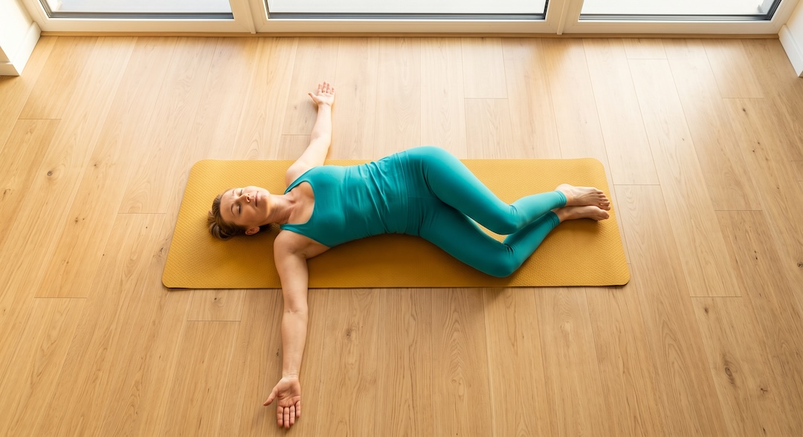
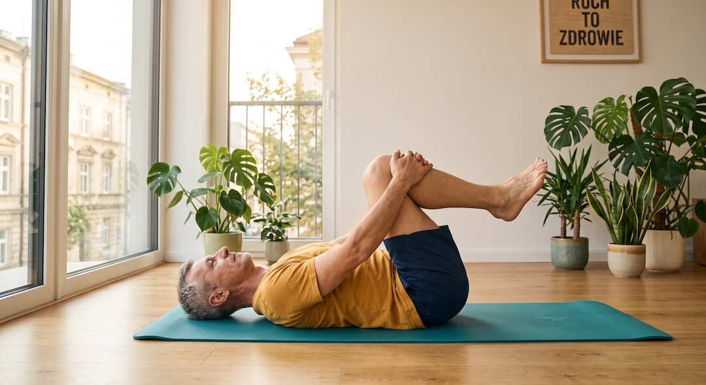
Jak ćwiczyć, gdy ból zaczyna odpuszczać — poziom 2?
Na ten poziom przechodzisz, kiedy codzienne czynności znowu idą w miarę gładko, a ćwiczenia z poziomu 1 przestały być wyzwaniem. Tu zaczyna się praca mięśni, które trzymają tułów: pośladków, brzucha i prostowników grzbietu.
4. Mostek. Pozycja startowa: leżysz na plecach, kolana ugięte, stopy płasko na szerokość bioder, ręce wzdłuż tułowia. Ruch: napinasz pośladki i unosisz biodra, aż ciało utworzy prostą linię od barków do kolan. Zatrzymujesz się na moment i powoli opuszczasz biodra, kręg po kręgu. Oddech: wydech przy unoszeniu. Typowy błąd: przeprost w dolnym odcinku pleców, czyli wypychanie brzucha wyżej niż linia barki–kolana, oraz odpychanie się głową od podłoża.
5. Koci grzbiet. Pozycja startowa: klęk podparty, kolana pod biodrami, dłonie pod barkami, łokcie proste, ale niezablokowane. Ruch: na wydechu zaokrąglasz plecy w górę i chowasz brodę, na wdechu powoli pozwalasz plecom opaść w łagodne wygięcie i unosisz wzrok. Ruch zaczyna się od miednicy, nie od głowy. Zakres tylko taki, przy którym ból nie narasta. Typowy błąd: wieszanie się na nadgarstkach i gwałtowne przeskakiwanie między pozycjami.
6. Bird dog. Pozycja startowa: klęk podparty jak wyżej, plecy w naturalnym ustawieniu, czyli ani wygięte, ani zgarbione. Ruch: jednocześnie wysuwasz do przodu prawą rękę i do tyłu lewą nogę, aż obie znajdą się mniej więcej na wysokości tułowia. Miednica stoi w miejscu, jakby na krzyżu stała szklanka wody. Zatrzymujesz się na spokojny wdech i wydech, wracasz i zmieniasz stronę. Typowy błąd: unoszenie nogi zbyt wysoko, co wygina dolny odcinek pleców, i obracanie miednicy. To klasyczne ćwiczenie kontroli motorycznej, a ta grupa ćwiczeń dawała w badaniach lepsze efekty niż minimalna interwencja.
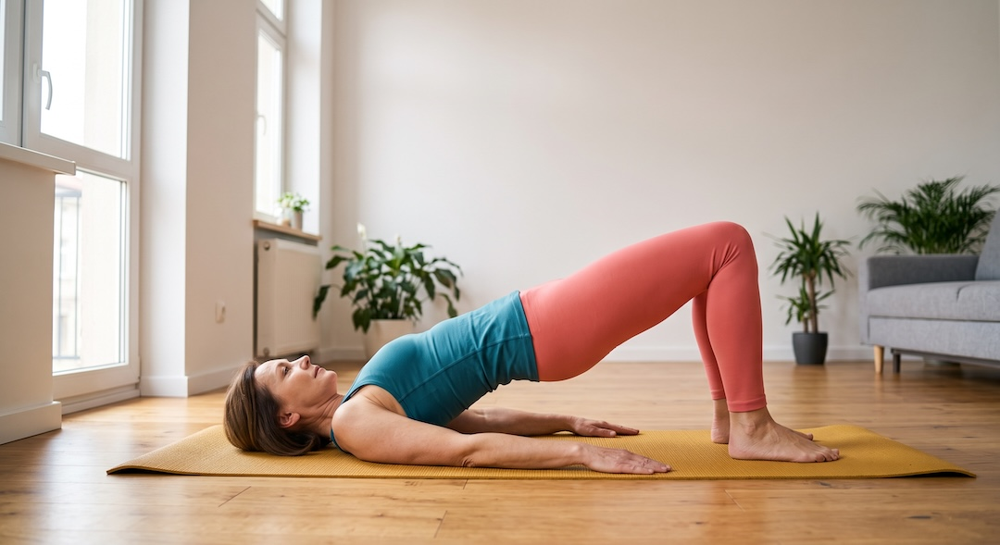
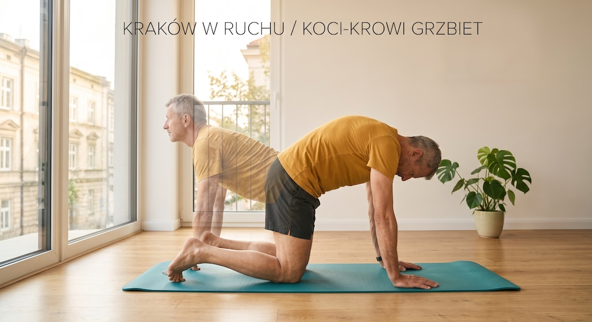
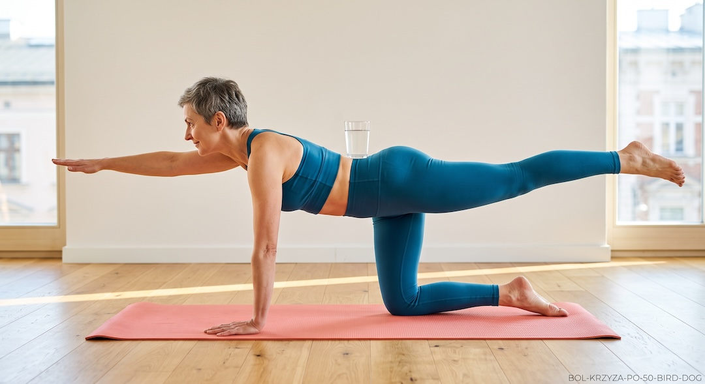
Jak wzmacniać plecy na co dzień — poziom 3?
Tu już nie gasisz bólu, tylko budujesz zapas siły na kolejne lata. W metaanalizie z 2020 roku trening oporowy był jedną z najwyżej ocenianych form ćwiczeń pod względem poprawy sprawności, choć przy niskiej jakości dowodów. Bezpieczne zasady dokładania obciążenia znajdziesz też w przewodniku po treningu siłowym po 50-tce.
7. Przysiad do krzesła. Pozycja startowa: stoisz tyłem do stabilnego krzesła, stopy na szerokość bioder albo trochę szerzej, palce lekko na zewnątrz. Ruch: wypychasz biodra do tyłu, jakbyś zamykał drzwi pośladkami, i uginasz kolana, aż delikatnie dotkniesz siedziska. Bez siadania wstajesz, napinając pośladki. Plecy proste, ale nie sztywne jak kij, klatka piersiowa skierowana do przodu, kolana idą w kierunku palców stóp. Typowy błąd: kolana uciekające do środka, zaokrąglanie dolnej części pleców i klapnięcie na krzesło. Gdy seria przestaje być wysiłkiem, weź do rąk butelkę wody albo hantlę.
8. Podpór bokiem na kolanach. Pozycja startowa: leżysz na boku, opierasz się na przedramieniu, łokieć dokładnie pod barkiem, kolana ugięte tak, że stopy są za tobą. Ruch: unosisz biodra, aż ciało od głowy do kolan utworzy prostą linię. Zostajesz w tej pozycji, oddychając normalnie, potem opuszczasz biodra i zmieniasz stronę. Gdy wersja na kolanach jest łatwa, wyprostuj nogi i oprzyj się na stopach. Typowy błąd: biodra uciekające do tyłu, zapadanie się barku i wstrzymywanie oddechu.
Ile tego robić? Uczciwie: badania, do których dotarłem, nie wskazują jednej najlepszej liczby serii i powtórzeń. Rozsądny punkt wyjścia to tyle powtórzeń, ile zrobisz technicznie czysto, i stopniowe dokładanie, gdy robi się łatwo. Na tym poziomie spacer zamienia się w regularny marsz. Tak działał program w badaniu WalkBack, który był indywidualny i stopniowo zwiększany.
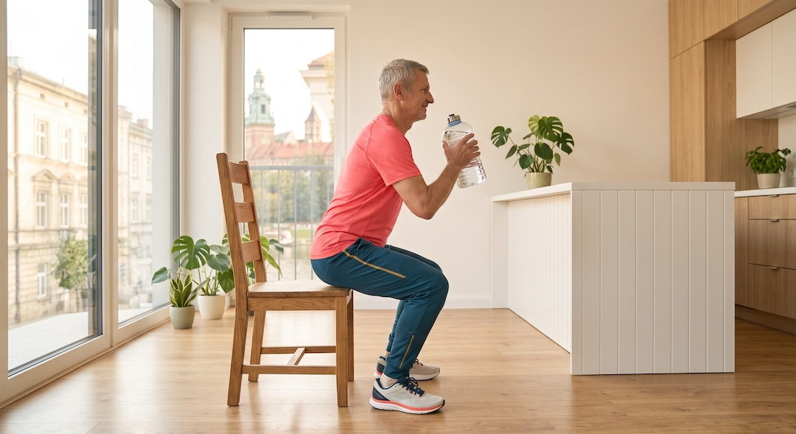
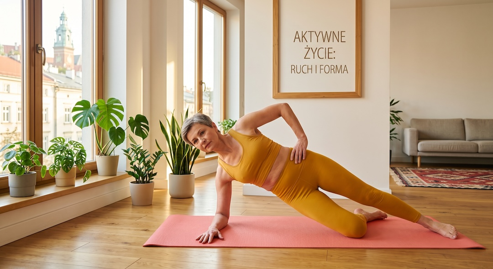
Ile bólu podczas ćwiczeń jest w porządku?
Trochę dyskomfortu jest w porządku, wyraźne nasilenie objawów już nie. Ulotka NHS ujmuje to tak: ćwiczenia mogą być niewygodne, ale nie powinny znacząco zwiększać objawów, a jeśli je nasilają, zrób przerwę. AOTMiT pisze o kontynuowaniu zwykłej aktywności zgodnie z tolerancją bólu.
To moja praktyczna reguła, nie wynik badania: porównuj ból przed ćwiczeniami, zaraz po nich i następnego ranka. Jeśli rano jest tak samo albo lepiej, ilość ruchu była w porządku. Jeśli rano jest wyraźnie gorzej, następnym razem zrób mniej powtórzeń albo mniejszy zakres, ale nie rezygnuj z ruchu całkowicie.
Nie panikuj też przy zakwasach. W przeglądzie Cochrane drobne skutki uboczne, jak chwilowe nasilenie bólu i zakwasy, zdarzały się w grupach ćwiczących podobnie często jak w grupach bez ćwiczeń.
Zatrzymaj się natychmiast i wróć do sekcji o objawach alarmowych, jeśli w trakcie ćwiczeń pojawi się drętwienie krocza, kłopoty z oddawaniem moczu albo narastające osłabienie nogi.
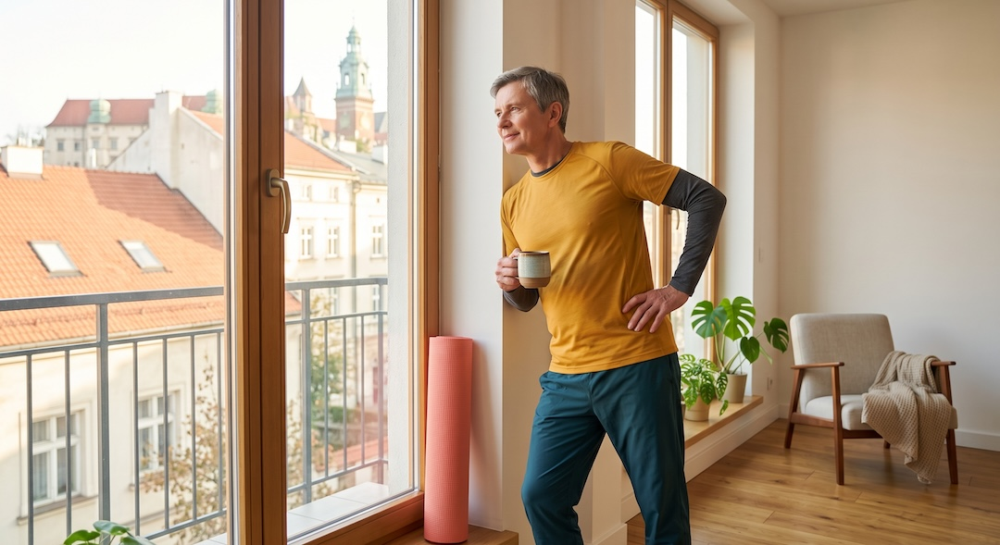
Czy pas lędźwiowy, wyciąg i rezonans pomagają na ból krzyża?
Pas i wyciąg nie, a rezonans zwykle nie jest potrzebny. WHO w wytycznych z 2023 roku odradza rutynowe stosowanie pasów i gorsetów lędźwiowych oraz wyciągu, bo możliwe szkody prawdopodobnie przewyższają korzyści. NICE pisze podobnie: nie oferować pasów, gorsetów ani wyciągu przy bólu krzyża, z rwą kulszową lub bez niej.
Z rezonansem jest podobnie. NICE zaleca, by poza opieką specjalistyczną nie kierować rutynowo na badania obrazowe przy bólu krzyża, a w opiece specjalistycznej rozważać je tylko wtedy, gdy wynik może zmienić leczenie. AOTMiT nie rekomenduje obrazowania przy braku dodatkowych objawów.
Znam to kuszenie, bo zdjęcie daje poczucie, że coś się wreszcie dzieje. Tyle że w danych zebranych przez AOTMiT obrazowanie nie dawało korzyści w ocenianych kategoriach skuteczności, za to wiązało się z wyższymi kosztami i większą absencją chorobową.
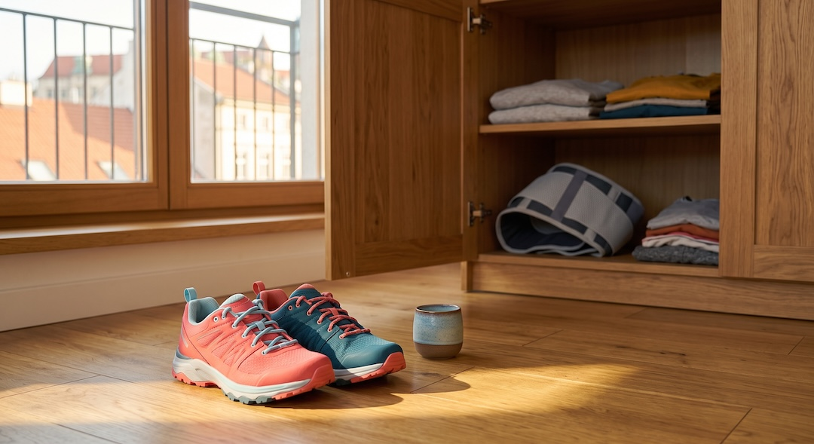
Jak nie dopuścić do nawrotu bólu krzyża?
Chodzić regularnie i stopniowo coraz więcej. W randomizowanym badaniu WalkBack, opublikowanym w 2024 roku w The Lancet, 701 dorosłych po niedawnym epizodzie bólu krzyża trafiło albo do programu marszu z edukacją prowadzonego przez fizjoterapeutów, albo do grupy bez leczenia.
W grupie marszowej mediana czasu do nawrotu bólu ograniczającego aktywność wyniosła 208 dni, w grupie kontrolnej 112 dni. Ryzyko takiego nawrotu było niższe o 28 procent.
Dlaczego to ważne po 50? Według AOTMiT przewlekły zespół bólowy kręgosłupa występuje najczęściej w wieku 55–64 lat, a odsetek nawrotów bólu krzyża jest wysoki i sięga 80 procent. Ból krzyża to więc nie jednorazowa przygoda, tylko coś, co lubi wracać.
To badanie jest o nas dosłownie: średni wiek uczestników wynosił 54 lata. Są też ograniczenia. Program obejmował sześć sesji z fizjoterapeutą w ciągu sześciu miesięcy, więc samotne spacery bez planu mogą działać słabiej. W grupie marszowej odnotowano też więcej zdarzeń niepożądanych dotyczących nóg: 100 wobec 54 w grupie kontrolnej. Dlatego dystans dokładaj stopniowo, a nie od razu.
Mimo to marsz jest tani, dostępny i nie wymaga sprzętu. Zestaw z poziomu 3 plus regularny marsz to prosty plan na kolejne lata. Jeśli chcesz uporządkować tempo i przerwy, porównaj go z opisem marszu japońskiego i 10 000 kroków.
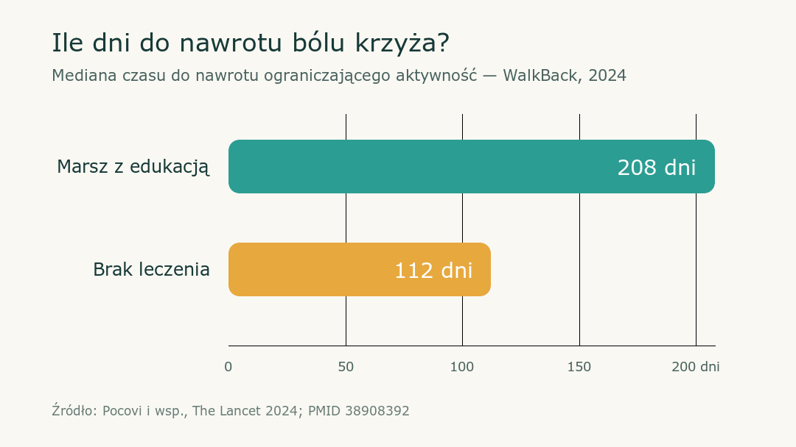
Najczęściej zadawane pytania
Czy przy bólu kręgosłupa lędźwiowego można ćwiczyć?
Tak, jeśli nie masz objawów alarmowych i lekarz nie rozpoznał przyczyny wymagającej innego postępowania. Zacznij od łagodnego ruchu w tolerowanym zakresie. Ćwiczenie może być niewygodne, ale nie powinno wyraźnie nasilać objawów.
Jakie ćwiczenia na ból krzyża wybrać?
Nie ma jednego zestawu najlepszego dla wszystkich. W ostrym bólu zacznij od łagodnych ruchów i krótkich spacerów, potem dołącz ćwiczenia stabilizacyjne i siłowe. Najważniejsze są bezpieczeństwo, stopniowanie oraz codzienna regularność.
Co pomaga na ból krzyża?
Najczęściej pomaga stopniowy powrót do zwykłej aktywności, ćwiczenia dobrane do możliwości i regularny marsz. Pilnej oceny wymagają między innymi problemy z pęcherzem lub jelitami, drętwienie krocza albo narastające osłabienie nóg.
Przy bólu pleców leżeć czy chodzić?
Jeżeli nie ma objawów alarmowych, leżenie nie powinno trwać dłużej niż 1–2 dni. Potem lepiej wracać do codziennego ruchu w granicach tolerancji bólu, nawet od kilku krótkich przejść po mieszkaniu.
Źródła
- Cochrane: Dahm i wsp., Advice to rest in bed versus advice to stay active for acute low-back pain and sciatica (przegląd systematyczny)
- Cochrane: Hayden i wsp., Exercise therapy for chronic low back pain (przegląd systematyczny, 249 badań)
- Cochrane: Saragiotto i wsp., Motor control exercise for chronic non-specific low-back pain (przegląd systematyczny)
- Owen i wsp., Which specific modes of exercise training are most effective for treating low back pain? Network meta-analysis, British Journal of Sports Medicine
- WHO: komunikat o pierwszych wytycznych dotyczących niechirurgicznego leczenia przewlekłego pierwotnego bólu krzyża u dorosłych
- NICE NG59: Low back pain and sciatica in over 16s, assessment and management (rekomendacje)
- NHS Borders (Right Decision Service, NHS Scotland): ulotka Back Pain z objawami alarmowymi zespołu ogona końskiego
- Berkshire Healthcare NHS Foundation Trust: ulotka dla pacjentów Low back pain z ćwiczeniami, przegląd luty 2026
- AOTMiT: Rekomendacja nr 4/2020 Prezesa Agencji w sprawie profilaktyki przewlekłych bólów kręgosłupa
- AOTMiT: zalecenia technologii medycznych dla programów profilaktyki przewlekłych bólów kręgosłupa — aktualizacja 2025
- Pocovi i wsp., WalkBack: randomizowane badanie marszu z edukacją w zapobieganiu nawrotom bólu krzyża, The Lancet 2024;404:134-144 (rekord PubMed)
Uwaga: Artykuł ma charakter informacyjny i edukacyjny. Nie zastępuje konsultacji lekarskiej, diagnozy ani leczenia.